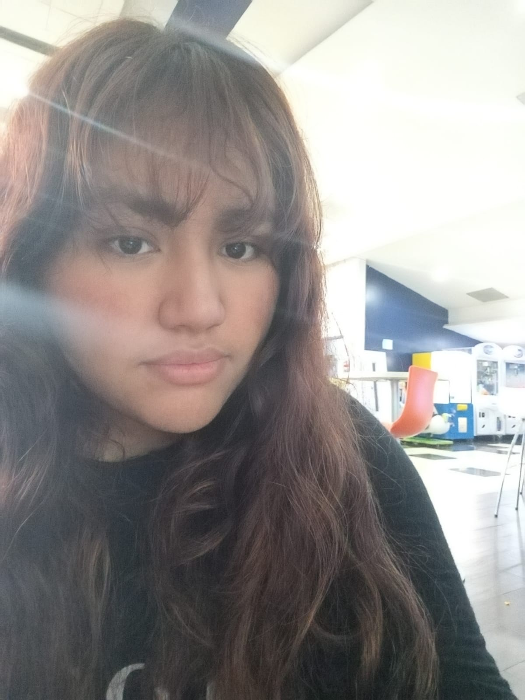

Historia laboral

Leonardo Rangel Cantú
Programación Web

Karina Viadney González Garza
Diseño Web

Itzel Guadalupe Torres Ruiz
Creadoras de contenido audiovisual
Noami Cipatli Peña Vargas
Creadoras de contenido audiovisual